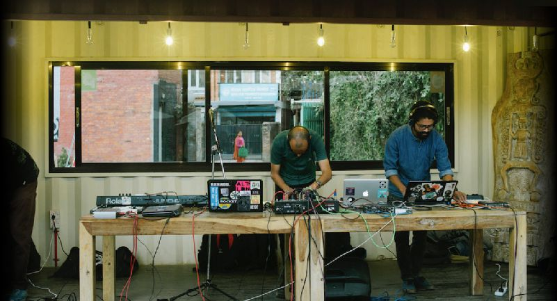

Habiendo experimentado desastres naturales e incertidumbres políticas, un grupo de jóvenes artistas y organizadores nepaleses están buscando recrear una escena musical electrónica propia.
Marcelo RuffinoNov 10th, 2019
Nepal siempre ha cautivado la imaginación. Ubicado entre dos superpotencias: India y China, y ubicado en la cima del Himalaya, la cordillera más alta del mundo, el país tiene más de 2.000 años de historia y cultura. Nepal también se ha convertido en un destino para quienes buscan una experiencia cultural única. Como tal, la ciudad capital de Katmandú, el punto de acceso total para el país, cuenta con un paisaje musical notable: una vibrante incubadora no solo de DJs y productores, sino también de un grupo acogedor de personas, ansiosos por formar una comunidad. "He visto mucho interés de India y Pakistán aquí, probablemente porque somos un país pacífico", dice por teléfono el productor nepalés phatcowlee. Con crecientes tensiones en otras partes del sur de Asia, especialmente entre Pakistán e India, Nepal se ha convertido en un centro para que los artistas se congreguen.
"Puedo invitar a un paquistaní y a un indio aquí y todos pueden actuar", dice Rishi Jha, cofundador de la agencia cultural We All should Play. "Si un indio quiere ir a Pakistán, es imposible. Si un paquistaní quiere ir a la India, es imposible. Aquí, celebramos ser del sur de Asia". "La versión más reciente de la escena comienza en el advenimiento del milenio", dice Ranzen Jha, el padrino no oficial de la escena de música electrónica nepalí. “Los rituales semanales de los martes en el Club Galaxy donde aparecieron DJs como, Kranti y Nishan, fueron los primeros bailes en Katmandú. Más tarde, Funky Buddha comenzó como un lugar de referencia para la música psytrance ".
Pronto, la escena brotó retoños. Party Nepal, una empresa de eventos, proporcionó el primer sitio web para los próximos listados de eventos. La música electrónica llegó a la televisión y, liderada por algunos medios de música en Katmandú, principalmente en la zona turística de Thamel, se desarrolló un nuevo tipo de estilo de vida. Las generaciones más jóvenes comenzaron a gravitar hacia la música house, techno y bass, y se desarrolló una cultura de bricolaje distintiva: festivales como Shanti Jantra, Universal Religion, Moodelila, Dark Sun, Ambient Valley y Dancemandu se llevaron a cabo entre 2007 y 2014.